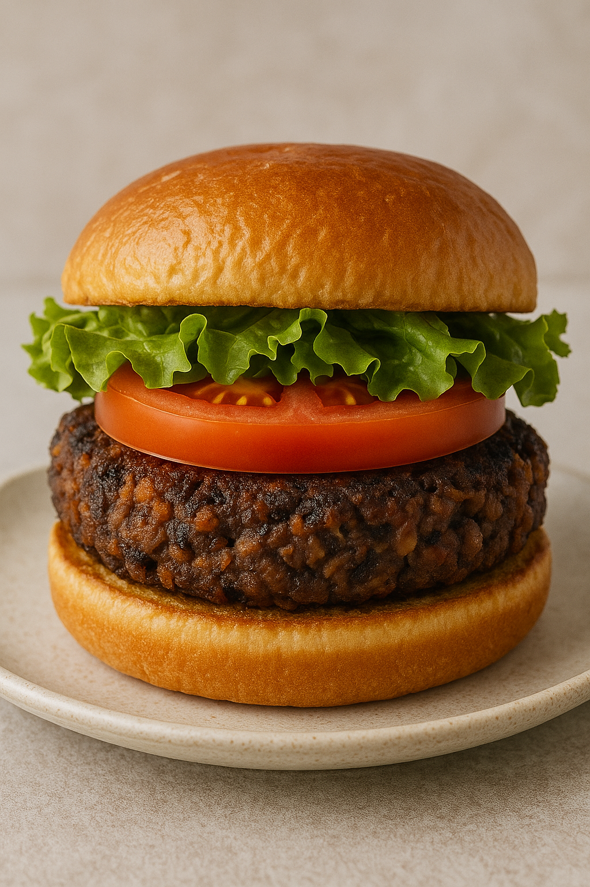

Black Bean Burger Patties

Hearty black bean patties perfect for burgers or bowls.
Yield: 6–8 patties |
Prep Time: 20 minutes |
Cook Time: 35 minutes
Black Bean Patties Ingredients
- 2 (14-ounce) cans black beans, drained, rinsed, and patted dry
- 1 tablespoon extra-virgin olive oil
- ¾ cup (100 g) finely chopped bell pepper
- 1 cup (130 g) finely chopped yellow onion
- 3 garlic cloves, minced
- 1½ teaspoons ground cumin
- 1 teaspoon chili powder
- ½ teaspoon garlic powder
- ¼ teaspoon smoked paprika
- ½ cup (60 g) bread crumbs or oat flour
- ½ cup (70 g) feta cheese (optional)
- 2 large eggs
- 1 tablespoon Worcestershire sauce
- 2 tablespoons ketchup, mayo, or BBQ sauce
- Pinch salt and black pepper
Directions
- Preheat oven to 325°F (163°C). Spread beans on a lined baking sheet and bake 15 minutes to dry slightly.
- Sauté olive oil, bell pepper, onion, and garlic over medium heat for 5–6 minutes until softened. Blot away excess moisture.
- Combine veggies with cumin, chili powder, garlic powder, smoked paprika, bread crumbs, feta (if using), eggs, Worcestershire, ketchup, salt, and pepper.
- Add beans and mash or pulse, leaving some chunks. Shape into ½-cup patties about ¾-inch thick.
- Bake at 375°F (191°C) for 10 minutes per side (20 minutes total), or grill on greased foil 8 minutes per side over medium-high heat.